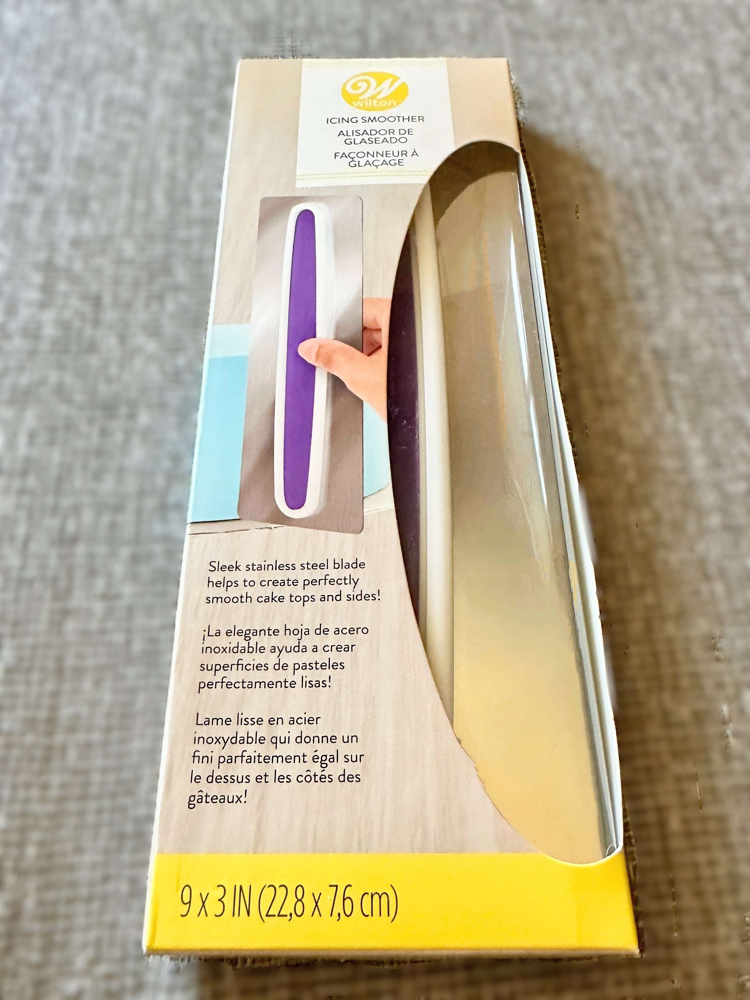
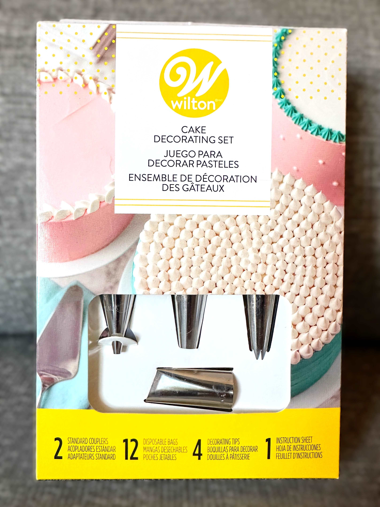
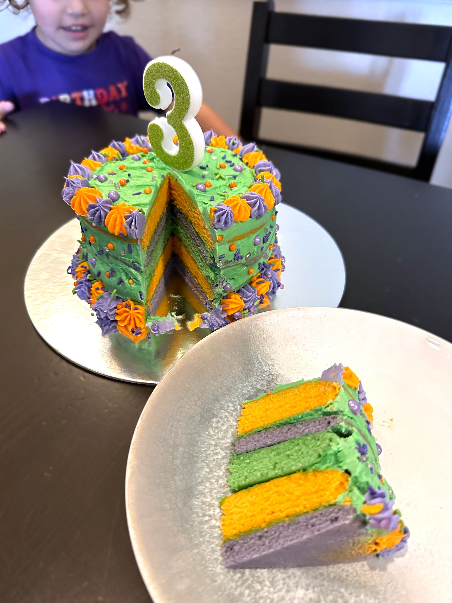
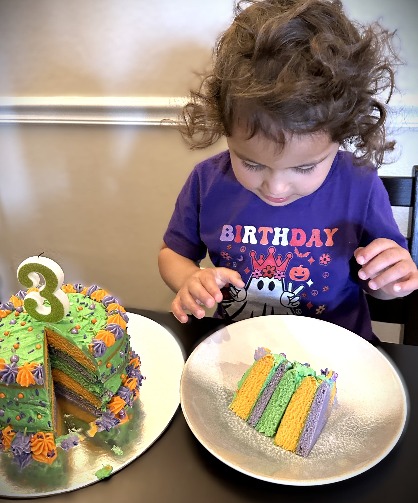
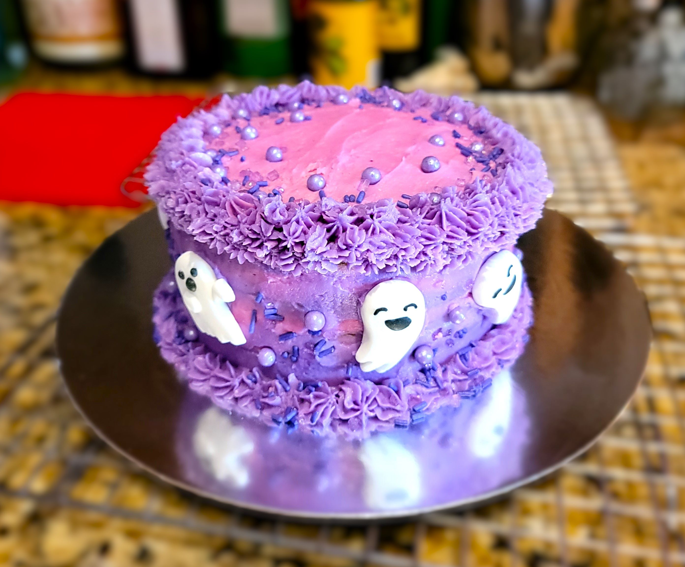
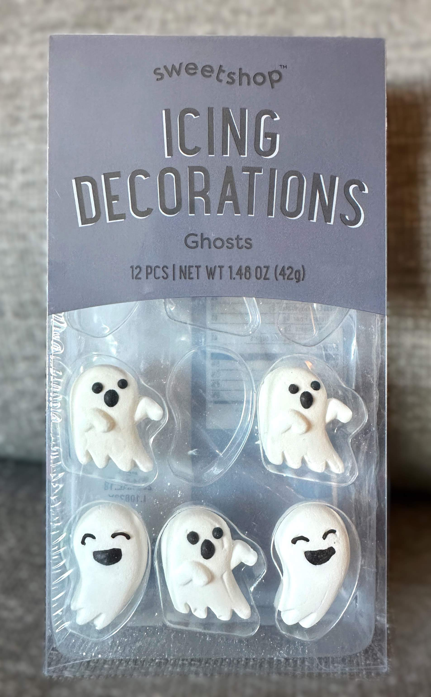

TURNTABLE OR CARDBOARD BASE
- It's important to have a solid base for your cake, as you'll likely need to turn it as you decorate. If you plan to decorate more cakes in the future you can purchase a turntable. They are great for quick decorating and do not require much labor.
- If decorating is not something you plan to do much of and you'd like to keep it simple, a cardboard cake base alone works just fine. They are disposable, portable, and easy to turn on a flat surface, but do require a bit more manual labor.
ICING SPATULA AND SMOOTHER
- Spatulas are very helpful for stacking and applying icing your cake.
- Smoothers help to scrape excess icing and smooth down the edges to create a uniform look around the circumference of your cake. Ridged smoothers can also add texture to your overall icing.

DECORATING SETS
- There are many different decorating kits on the market. They usually include different piping tips and piping bags. These are essential to create texture and design on your cake or cupcake. The large piping tips also serve to add fluffy layers between your cake sections.

COLORING AND DECORATIONS
- Food-grade coloring is a fantastic choice for creating beautiful custom cakes and cupcakes.
- There are many natural options, such as Watkins, which are plant-based and do not contain artifical dyes. I've found they typically bake to a pastel shade so you need much more than artificial coloring. They are great for coloring frosting.
- Artificial coloring (FD&C synthetic dyes), especially gels, can be used to create bright and vivid cakes.


- Some decorations can be piped, but for others, a quick and simple purchased icing decoration/transfer is an attractive option. You can find these online or at most stores. For the cake below I used a seasonal ghost icing decoration for my daughter's October birthday. Sprinkles of all kinds can add a burst of color and fun to any cake or cupcake.


ADDITIONAL RESOURCES FOR FROSTING AND BAKING
- The Wilton website has some great decorating tips and ideas to explore.
- Baking and cake blogs, such as Sugar Spun Run can provide a wealth of knowledge and the internet is filled with them. Just use your favorite search engine.
- Some of my favorite allergen-friendly (typically listed as vegan) websites for finding more baking alternatives are The Conscious Plant Kitchen,
Culinary Shades,
and The Banana Diaries.
|